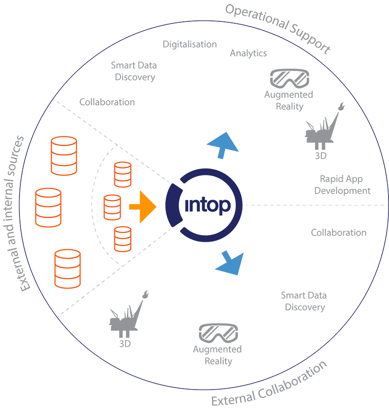

Solution
IntOp offers next generation technology in innovative ways. Users will see all the benefits of AI, Machine Learning, semantics and Cognitive Computing, without having to go through costly and time-consuming implementations of the technology needed. We set out to make products where others offer processes and frameworks.

With our system, you will gain new insight across disciplines and information silos without moving data. See information from any system in contexts across activity types, departments, customer segments and geography.
The IntOp solutions helps you find the patterns in your information without building new information silos, changing existing workflows or train users on new technology. Reduce risk, avoid errors and reduce effort in handling and analyzing large amounts of data.
IntOp Engine operationalizes data by digitizing it and gathering it into numerous contexts. The contexts are designed either generically for the business type or segment, or specifically for the needs of user groups based on the information they have available or the processes they work by.
Digitalization
Digitalization may be defined as the process where data and information is liberated from files, databases and application and is converted to digital content without the limitations the host systems impose.
Smart Data Discovery
Smart Data Discovery is the next generation of solutions for Big Data and Cognitive Computing. With Smart Data Discovery, IntOp makes it possible for any user to discover information, find patterns and see data in new contexts.
Analytics
A primary goal of many solution within the Big Data arena is to make data available for analysis. A common problem of data lakes is that the information is often stripped of its metadata as part of the data ingestion process.
Cutting-edge technology, effortless implementation
Get all the benefits from being in the forefront of the digital evolution, without the pain of transforming your processes or data.
The Intop solution will structure your unstructured data and enable easy navigation through a variety of intelligent and secure interfaces.
Digitalization
Digitalization may be defined as the process where data and information is liberated from files, databases and application and is converted to digital content without the limitations the host systems impose. Gartner Group’s definition is: “Digitalization is the use of digital technologies to change a business model and provide new revenue and value-producing opportunities; it is the process of moving to a digital business”
In addition, the term digitalization also often means changing entire processes or business models to make these digital.
In this process, digitization is important. Digitization is originally defined as the process of transforming analog information into digital content. Gartner says, “Digitization is the process of changing from analog to digital form.” In many industries, the term has taken on an extended meaning, to include the process of further transforming files and records to true digital formats, where the information is readily available for analysis and use. IntOp Engine provides powerful digitization capabilities, and will digitize any data or information in the sources or host systems it is connected to. .
Smart Data Discovery
Smart Data Discovery is the next generation of solutions for Big Data and Cognitive Computing. With Smart Data Discovery, IntOp makes it possible for any user to discover information, find patterns and see data in new contexts. IntOp has developed a pragmatic solution that employs cognitive computing to set information in contexts faster and with more precision than other solutions. The information is placed in contexts and presented with consistent metadata, and this makes it easier for the users to find, understand and analyze information.
According to Gartner Group, "Smart data discovery is a next-generation data discovery capability that provides insights from advanced analytics to business users or citizen data scientists without requiring them to have traditional data scientist expertise" - read more here. Solutions that provide Smart Data Discovery capabilities, will prepare data, find patters in data and facilitate operationalizing and sharing data. Our solutions do this, and serves the results of our pragmatic cognitive computing solution to a wide array of users, that may discover information through IntOp Fetch or any other existing front end by navigating contextualized information.
IntOp takes the position that traditional analytics is not pragmatic and useful to all users. We focus on providing information in front ends that both enables discovery and analytics for any type of users. We enable discovery of data through navigation in information that has been placed in intuitive contexts. These may be contexts that are defined as standard processes or activities for the business or segment the users are working in, or derived from the sources of information they have available. IntOp Engine offers a tool for harvesting the knowledge of subject matter experts and specialists, build it into the solution and make it available to all users.
Analytics
A primary goal of many solution within the Big Data arena is to make data available for analysis. A common problem of data lakes is that the information is often stripped of its metadata as part of the data ingestion process. This leaves the analyst or users with the problem of re-defining what any data item is on a higher level before going into the details of enabling useful analytics. IntOp keeps and curates the metadata to avoid this problem. The data is kept in the host systems, and made available for Smart Data Discovery or analytics through IntOp’s solution. In addition, all raw metadata and content is made available for analysis via dedicated front ends.
While many other solutions focus on providing analytical tools to find patterns or trends in information, IntOp Engine’s powerful Context Layer finds those patterns before the information is made available for Smart Data Discovery and analysis. This further enables quantifying information types, patterns or contexts to provide a new level of analytics. Users may then focus on analyzing statistics to easily see not just the patterns, but the statistics of the patterns.
IntOp Engine enables analysis of all raw metadata and content, insights into why and how data is contextualized, and analytics of contextualized data both before and after it is made available to all users. The system caters to both trained analytics, that may build their own dashboards and charts with IntOp’s help or by themselves, and to the common users, that may have static dashboards and charts and at the same time use the systems powerful Smart Data Discovery capabilities to navigate and discover information.